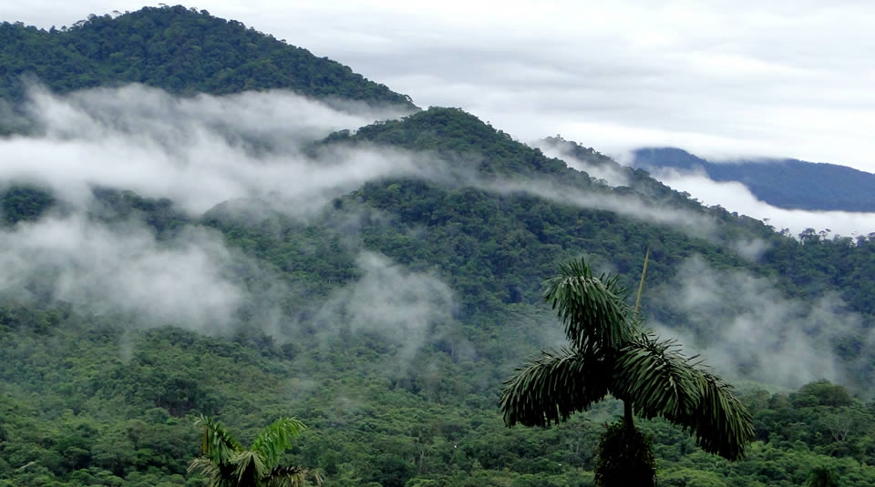
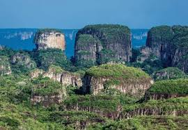
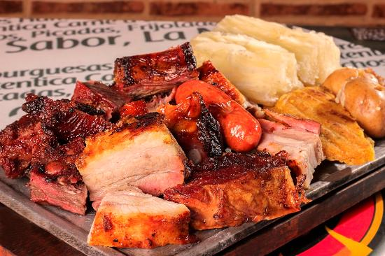
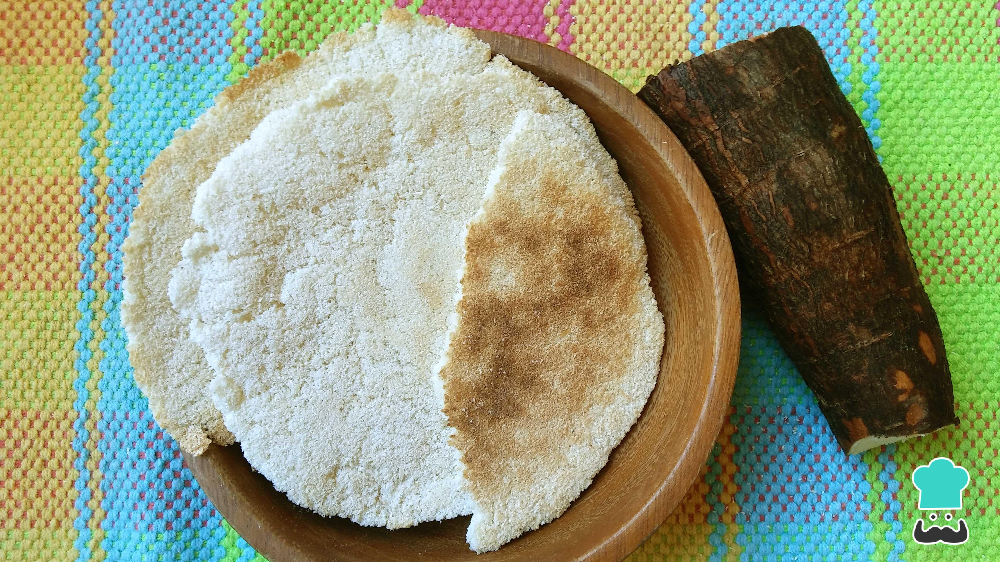
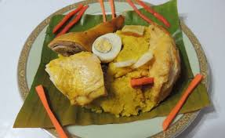

Informacion turistica
Caquetá es un destino fascinante en Colombia, conocido como la puerta de oro de la Amazonía. Aquí tienes algunos puntos destacados:
Florencia
La capital del departamento, ideal para el turismo peatonal y cultural.
Parque Nacional Natural Alto Fragua Indi Wasi

Un lugar mágico con biodiversidad única y paisajes impresionantes.
Serranía de Chiribiquete

Patrimonio de la humanidad, famoso por sus tepuyes y arte rupestre.
Comida Tipica
Carne a la Llanera (Mamona)

Carne de res asada al estilo llanero, sazonada y cocida a fuego lento sobre brasas.
Casabe

Un pan tradicional hecho de yuca, muy consumido por las comunidades indígenas.
Tamal Caqueteño

Variedad de tamal único de la región, preparado con carne, masa de maíz y especias, envuelto en hojas de bijao.
Economia
Los principales sectores económicos de Antioquia son:
Agricultura
- Cultivo de productos como yuca, arroz, plátano, maíz, cacao y frutas tropicales.
- Predomina la agricultura de subsistencia, pero también hay cultivos comerciales.
Ganadería
- Actividad clave en la región, especialmente la producción de carne y leche.
- La ganadería extensiva es predominante en el departamento.
Explotación Forestal
- Aprovechamiento de recursos maderables como caucho, madera y otros productos forestales.
- Importante fuente de ingresos, aunque requiere un manejo sostenible.